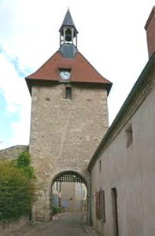
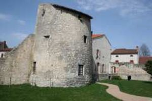
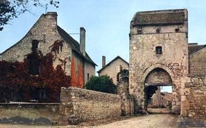
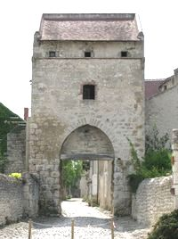
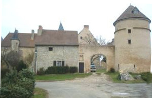
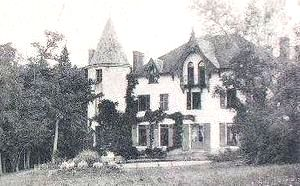
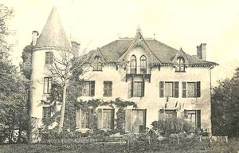

Recensement Jean-Claude Truffet







| Département | 03 — Allier |
| Canton | Chantelle |
| Commune | Charroux |
| Type d'édifice | Maison forte |
| Période d'origine | XIII-XV |
Trois châteaux à Charroux, le Beaulieu maison forte du XIVe siècle, de la Marche maison forte du XIIIe siècle et la petite Varenne du XV-XIXe siècle tour ronde. CHARROUX, Charroux-en-Bourbonnais fut, du XIIe au XVIe siècle, une importante place affranchie et fortifiée par les sires de Bourbon, devenus par la suite ducs de Bourbonnais et d'Auvergne. BEAULIEU, la seigneurie de Beaulieu, proche de la maison des Templiers de la Marche, semble constituée dès le XIVe siècle. En 1457, la terre de Beaulieu est donnée à Pierre Marchant redevable au duc de Bourbon. MARCHE, en 1251, Émery, prieur de Chantelle et Guillaume, précepteur de la milice du Temple de la Marche, concluent un échange par lequel le couvent de La Marche donne des cens à Taxat et Sare, contre une dîme à La Clote, aujourd'hui La Flotte, et Eschiat. La Marche était alors une seigneurie ecclésiastique, dont la chapelle et les bâtiments ont été fortifiés et enfermés dans une enceinte. Après la disparition de l'ordre des Templiers, la Marche fut attribuée à l'ordre des Hospitaliers de Saint-Jean de Jérusalem. Les structures subsistent encore aujourd'hui, mais les bâtiments sont occupés par une exploitation agricole. La PETITE VARENNE, pas d'information historique.
Charroux, ancienne place forte Charroux fut une ville fortifiée et un important carrefour d'échanges au Moyen Age. Sur un plateau rocheux protégeait par trois enceintes le donjon de bois qui se tenait sur son centre, la cour des dames ou l'on rentré par les portes d'Orient ou de l'Occident. Beaulieu, les bâtiments, dont quelques traces marquent encore l'origine, ont été installés en position fortifiée, sur le rebord d'un plateau dominant le passage de Chantelle à Jenzat. La Marche, les structures subsistent encore aujourd'hui, mais les bâtiments sont occupés par une exploitation agricole, la chapelle et les bâtiments ont été fortifiés et enfermés dans une enceinte.
La Petite Varenne, blotti dans un épais bosquet d'arbres, ce petit château a conservé le style des maisons fortes du XVe siècle, mais il a été entièrement remanié au XIXe siècle. Il se compose d'un corps de bâtiment de plan rectangulaire, à trois étages, flanqué d'une tour ronde à l'angle nord. Les ouvertures de la façade, symétriques autour d'un axe central, sont surmontées au niveau du toit d'un bel ensemble de fenêtres de comble en encorbellement, dans le style maison de plaisance. L'installation de la Petite Varenne provient d'un dédoublement du grand domaine de La Varenne au cours du XVe siècle.
Famille de Pierre Marchant Ordre des Hospitaliers"
Ville fortifié de Charroux avec bâtiment de Beaulieu de la Marche et château de la petite Varenne